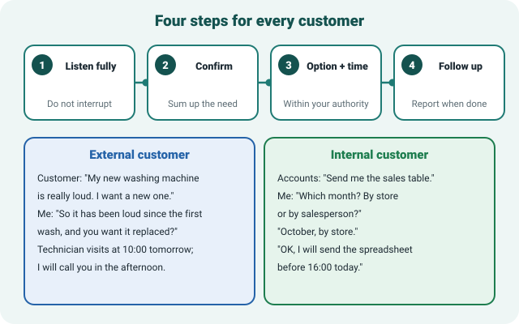

K3 · Problem solving and decision making › Level 3 Secure
Handle requests and complaints from internal and external customers
This lesson completes Sheet 3: Customer request log. Print template.
1. Objectives
- Sum up a customer's need in one sentence for them to confirm.
- Offer an option within your authority, with a time when you will report back.
2. Retrieval warm-up
- What are the 3 boxes on a meeting notes page?
- How does a meeting summary message end?
Answers
- Decisions; actions (who, what, when); open questions.
- By asking everyone to confirm or add anything missing.
Review: Confirming actions after meetings.
3. Explanation
Who are your customers? External customers buy your products or use your services. Internal customers are colleagues who need results from you. For example, accounts needs figures, and the warehouse needs orders with the right item codes.
Both kinds of customer need the same thing: to be understood correctly, and to know when they will get a result.

Four steps for handling a request
- Listen fullyDo not interrupt or rush to explain.
- Confirm"So you need…, is that right?"
- Option and timePromise only what you can do.
- Follow upReport back on time, even if it is not finished.
Listen fully before explaining. An upset customer usually needs to be heard first. Explaining too early can sound like making excuses.
Confirm in one sentence. Your summary has the problem and what the customer wants. Start working on it once they say "Yes, that's right".
Options within your authority. New staff usually cannot approve exchanges, discounts or refunds. Do not promise on your manager's behalf. Say what you know you can do. For example: "I'll ask a technician to check it, and I'll call you tomorrow afternoon with the result."
Follow up. Put the promised time on Sheet 1. If there is no result by then, still call with an update. Silence worries customers more than slow news.
When should you pass it to your manager? When the customer asks for something beyond your authority. Or when there is a safety issue, a large sum of money, or a threat. Pass it on with your notes, so the customer does not have to start again.
4. Workplace example
Hypothetical scenario. Sofia has worked for 6 weeks in sales at a home appliance store. A customer comes back, speaking loudly: "The washing machine you delivered yesterday is incredibly loud. I want a different one!"
Sofia lets the customer finish. Then she sums up: "So the machine has been loud since the first wash, and you want it replaced, is that right?" The customer nods.
Sofia knows she cannot approve an exchange. She says: "I'll log this and book a technician to check it at 10:00 tomorrow. I'll call you tomorrow afternoon with the result, and whether it will be repaired or replaced." She fills in Sheet 3 and tells the store manager straight away.
The technician finds that the transit bolts holding the drum were never removed. Once they are out, the machine runs quietly. The next afternoon, Sofia calls the customer with the result, as promised.
Why this works: Sofia does not promise an exchange she cannot approve. Her confirming sentence shows the customer he was understood. The call at the promised time keeps his trust.
5. Practice
Hypothetical scenario. You are a new IT support assistant at a logistics company. Nadia from accounts messages: "The second-floor printer is broken again! I need to print 50 invoices before 11:00. Please sort it out!" You do not know the fault yet. The third-floor printer works.
Write your confirming sentence and an option with a time.
Hint 1
Does Nadia need the printer fixed, or does she need her invoices printed before 11:00? Which is more urgent?
Hint 2
You can offer a temporary option for the urgent need, then set a time for fixing the printer.
Model answer
Confirm: "So the second-floor printer isn't printing, and you need 50 invoices before 11:00, is that right?"
Option: "I'll set up the third-floor printer on your computer now. It takes 10 minutes, so you can print in time. I'll check the second-floor printer this morning and update you at 14:00."
Log it on Sheet 3: who asked, the need, the option, update at 14:00.
(The scenario is hypothetical.)
6. Self-check
Choose an answer. Every option has an explanation.
Question 1. An upset customer is talking at length about a late delivery. What do you do first?
-
Not quite. Explaining too early can sound like an excuse. The customer needs to be heard first.
-
Correct. Correct. Listening fully and confirming shows the customer they were understood.
-
Not quite. If the problem is not yet clear, the customer has to start again.
Question 2. A customer asks for 20% off because of a late delivery. You cannot approve discounts. Which reply fits?
-
Not quite. A promise beyond your authority may not be kept, which loses more trust.
-
Correct. Correct. You promise only what you can do, with a time to report back.
-
Not quite. You have not asked the person who decides, so you cannot answer for them.
Question 3. Who is an internal customer of a warehouse worker?
-
Correct. Correct. A colleague who needs your work results is an internal customer.
-
Not quite. They are external customers. This lesson uses the 4 steps for both kinds.
-
Not quite. Every role has someone who needs results from it.
Question 4. It is time to report back, but the customer's issue is not solved yet. What should you do?
-
Not quite. Silence past the promised time worries the customer and loses trust.
-
Correct. Correct. Reporting on time, even with slow news, keeps trust.
-
Not quite. The customer would have to explain again. You made the promise, so you should call.
7. Reflection
- Who are your internal customers? What do they need from you each week?
- The last time you promised something to a customer or colleague, did you report back on time?
8. Real-world application
In the next 7 days, log 3 requests you receive on Sheet 3. Each one has a confirming sentence and a time to report back. At the end of the week, count how many times you reported back on time.
9. Metadata
| skill | K3 · Problem solving and decision making |
|---|---|
| level | Level 3 · Secure |
| group | N3 |
| framework_map | WEF: Service orientation and customer service; CSfW: 3c Identify and solve problems; 2a Communicate for work; SkillsFuture CCS: Customer Orientation; Problem Solving; NACE: Communication (reference only) |
| original | Vietnamese version |
| updated | 2026-11-14 |
Finish the lesson
Mark it as done and the site suggests reviews after 1, 3 and 7 days. The data stays on your device only.
Suggested reviews: